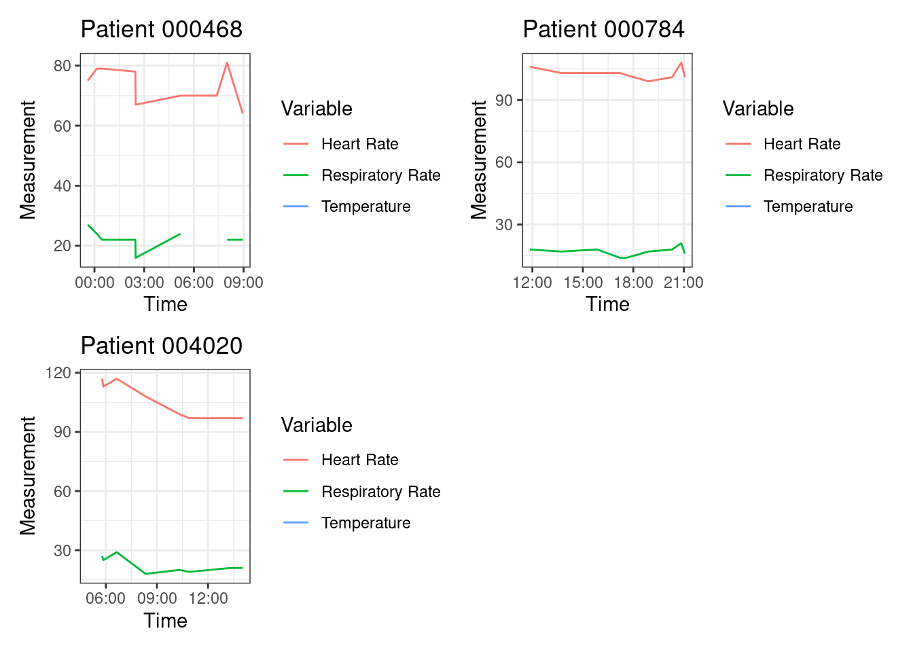

drive_deauth()Sepsis Report
This report was created by Bibin Joseph on Thursday, July 06, 2023 at 07:15 AM.
De Authenticate Google Drive API
Reading the Latest physiological data from Google Drive
file_link <- "https://drive.google.com/file/d/1bloQHuPsZIhTZTnqeYkj15W_gSmKtHOd"
ICU_data <- drive_read_string(file_link) %>%
read_delim(",")Removing the NA values form the Data
ICU_data_clean<-na.omit(ICU_data)Identify patients with sepsis and Creating the for Patients with Sepsis
Sepsis_Patients<-ICU_data_clean %>%
group_by(PatientID) %>%
filter(SepsisLabel == 1 & ICULOS == max(ICULOS)) %>%
select(PatientID, HR, Temp, Resp)Table.1 Patients who currently have sepsis (if any), along with their most recent heart rate, temperature, and respiratory rate
| PatientID | HR | Temp | Resp |
|---|---|---|---|
| 000468 | 81 | 38.22 | 22 |
| 000784 | 99 | 37.61 | 17 |
| 004020 | 97 | 37.78 | 21 |
Plots for all patients who have sepsis (if any) that show the complete history of their heart rate, temperature, and respiratory rate during their time in the ICU
# Subset the data to include only patients with sepsis
sepsis_data <- ICU_data %>% filter(SepsisLabel == 1)
# Group the data by PatientID
sepsis_data <- sepsis_data %>% group_by(PatientID)
# Create a function to plot heart rate, temperature, and respiratory rate for a single patient
plot_patient <- function(patient_data) {
ggplot(patient_data, aes(x = obsTime)) +
geom_line(aes(y = HR, color = "Heart Rate")) +
geom_line(aes(y = Temp, color = "Temperature")) +
geom_line(aes(y = Resp, color = "Respiratory Rate")) +
labs(x = "Time", y = "Measurement", color = "Variable") +
ggtitle(paste0("Patient ", unique(patient_data$PatientID))) +
theme_bw()
}
# Create a list of plots for each patient with sepsis
patient_plots <- sepsis_data %>%
group_split() %>%
map(plot_patient)
# Arrange the plots in a grid
wrap_plots(patient_plots, ncol = 2, width = 12, height = 8) 
Table.2 showing the change in heart rate, temperature, and respiratory rate between the last two measurements for all patients
ICU_diff<-ICU_data %>%
group_by(PatientID) %>%
summarise(`Temperature Difference` = last(Temp) - Temp[n()-1],
`Heart Rate Difference` = last(HR) - HR[n()-1],
`Respiratoy Rate Difference` = last(Resp) - Resp[n()-1])
datatable(ICU_diff,
options = list(pageLength = 10, searching=TRUE),
filter = 'top')